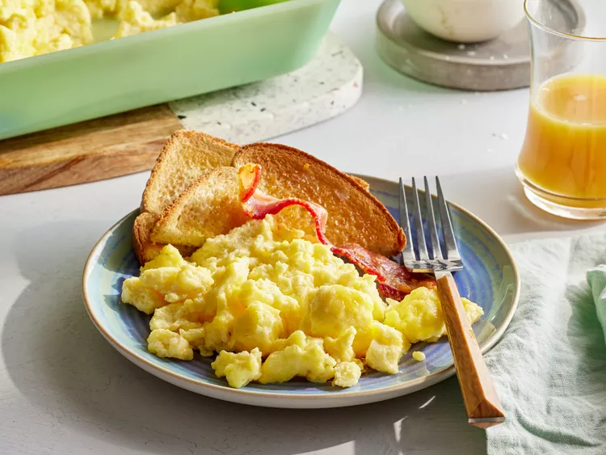

Oven Scrambled Eggs

Description
These baked scrambled eggs are light and fluffy and are a snap to put
together for a big crowd.
Ingredients
- 1/2 cup butter or margarine, melted
- 24 eggs
- 2 1/4 teaspoons salt
- 2 1/2 cups milk
Steps
-
Gather all ingredients. Preheat the oven to 350 degrees F (175 degrees
C).
- Pour melted butter into a 9x13-inch glass baking dish.
-
Whisk together eggs and salt in a large bowl until well-blended.
Gradually whisk in milk. Pour egg mixture into the buttered dish.
-
Bake uncovered in the preheated oven for 10 to 15 minutes. Stir egg
mixture and continue to bake until eggs are set, 10 to 15 minutes more.
- Serve and enjoy!